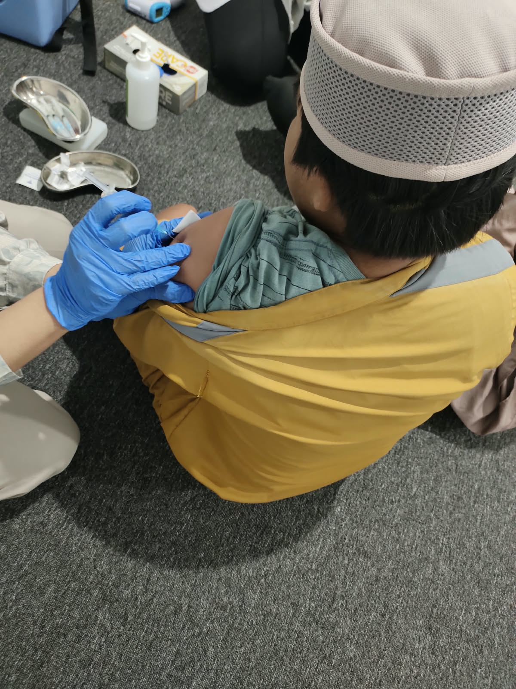
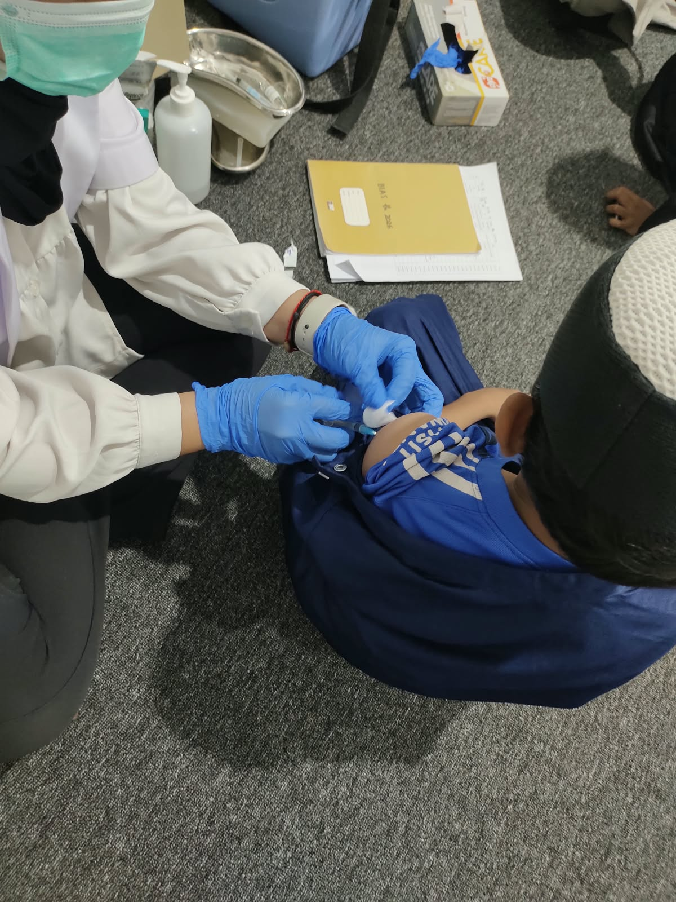
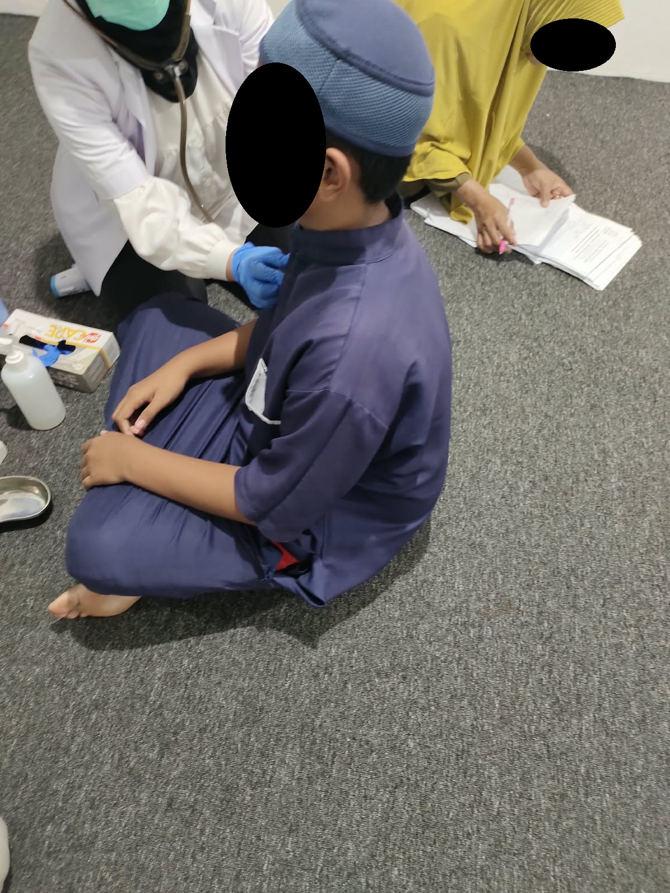
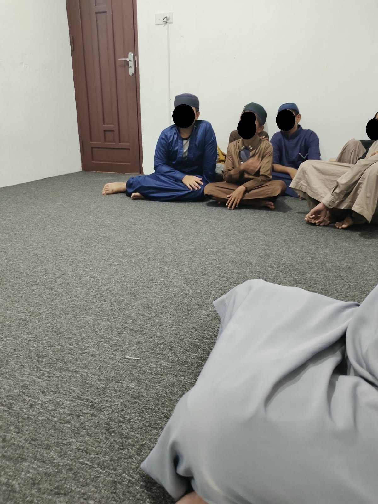
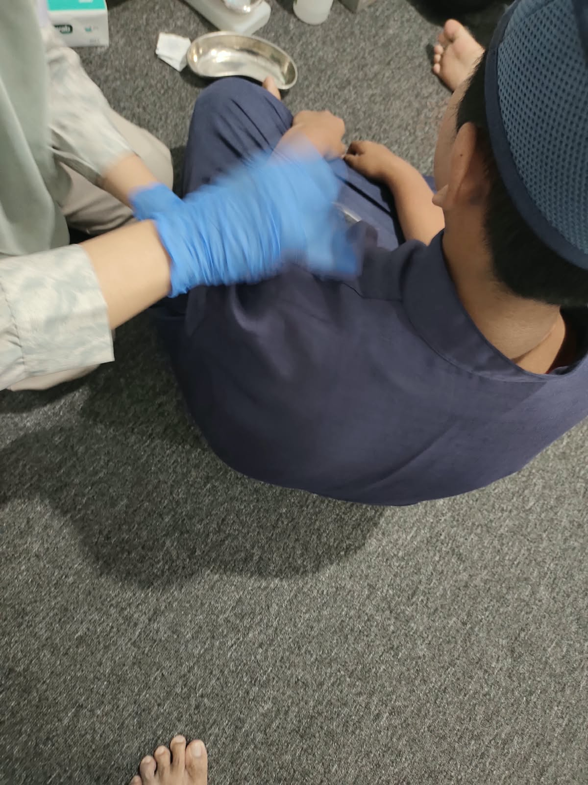

Alhamdulillah, kegiatan Bulan Imunisasi Anak Sekolah (BIAS) di Rumah Tahfizhul Qur'an Al Imam Adz Dzahabiy telah terlaksana dengan lancar pada Senin, 14 September 2026 . Kegiatan ini dilaksanakan bekerja sama dengan UPTD Puskesmas Manggar dan bertempat di Pondok RTQ Al Imam Adz Dzahabiy.
Pelaksanaan imunisasi merupakan bagian dari program Bulan Imunisasi Anak Sekolah (BIAS) dengan sasaran santri Marhalah Ula Kelas 1 dan Kelas 5 . Kegiatan dimulai pada pukul 08.30 WITA dan dilaksanakan oleh petugas kesehatan dari Puskesmas Manggar dengan pendampingan dari pihak RTQ.
Pada pelaksanaan kali ini, jenis imunisasi diberikan sesuai dengan sasaran kelas. Santri Kelas 1 mendapatkan imunisasi MR (Measles Rubella) , sedangkan santri Kelas 5 mendapatkan imunisasi Td (Tetanus Difteri) .






Sebelum pelaksanaan, pihak RTQ telah menyampaikan pemberitahuan kepada wali santri serta meminta persetujuan orang tua atau wali. Santri juga diimbau untuk berada dalam kondisi sehat pada saat mengikuti imunisasi.
Kegiatan ini menjadi salah satu bentuk sinergi antara lembaga pendidikan dan pelayanan kesehatan dalam mendukung kesehatan anak usia sekolah. Dengan kondisi kesehatan yang baik, para santri diharapkan dapat mengikuti kegiatan belajar dan menghafal Al-Qur'an dengan lebih baik.
Anak sehat, belajar semangat, menghafal lebih kuat.
Semoga ikhtiar bersama dalam menjaga kesehatan para santri ini memberikan manfaat dan keberkahan bagi seluruh keluarga besar RTQ Al Imam Adz Dzahabiy.
Jazakumullahu khairan kepada UPTD Puskesmas Manggar , para petugas kesehatan, wali kelas, serta seluruh wali santri yang telah mendukung terlaksananya kegiatan BIAS di RTQ Al Imam Adz Dzahabiy.
Semoga Allah Ta'ala senantiasa memberikan kesehatan, keberkahan, dan kemudahan kepada seluruh santri dalam menuntut ilmu, menghafal Al-Qur'an, serta menjadi generasi yang berilmu dan berakhlak mulia.